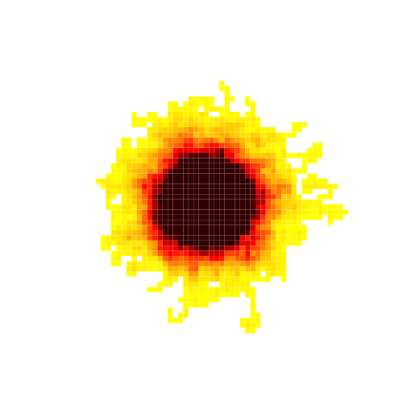
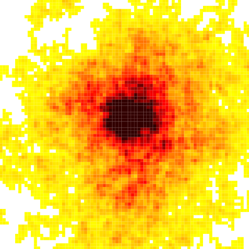
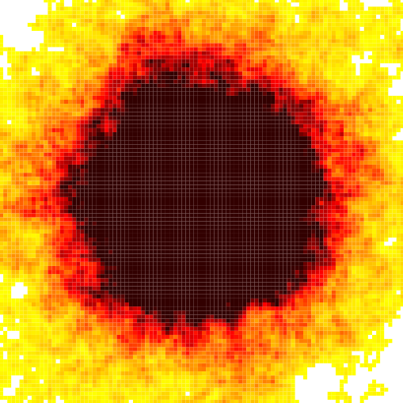
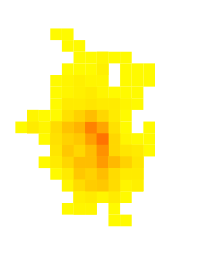
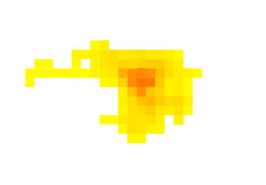

Primeiramente, vamos analisar o que ocorre com a distância máxima média dos RandomWalkers para vários valores de N:

Os valores computados são uma média das distâncias máximas obtidas em 1000 simulações para cada valor de N.
Como se pode observar, as distâncias máximas médias crescem de forma proporcional a raiz quadrada da quantidade de passos. Com algum trabalho manual, pude notar que o crescimento é muito próximo a 1,5 * raiz(N).
Algumas imagens interessantes
Aqui vão os resultados visuais de alguns testes:

100 passos e 1000 walkers

1000 passos e 100 walkers

1000 passos e 1000 walkers

Pikachu

Hipopótamo
Infelizmente não tenho os dados das simulações que geraram essas últimas imagens legais :(